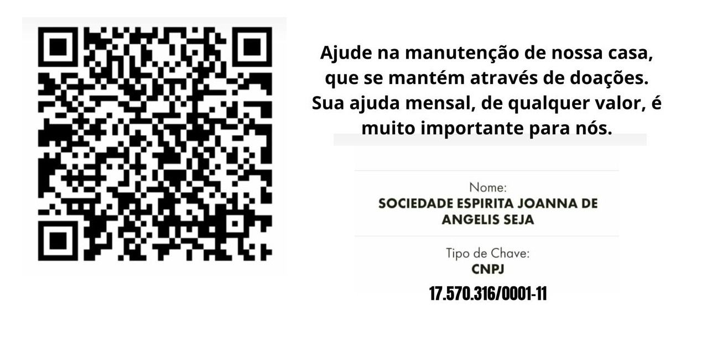
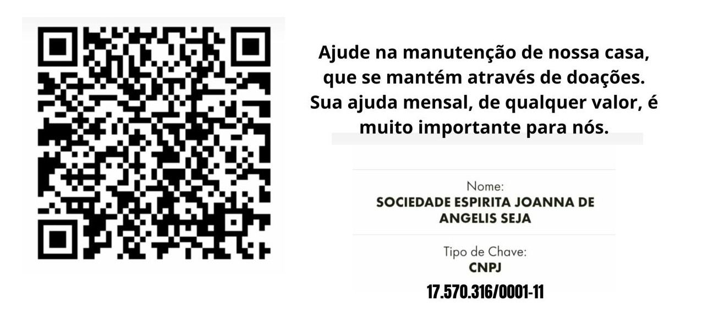

Programação das Atividades da SEJA
🦋 Segunda-feira
19h20 às 21h00 - Tratamento Magnético (privado);
🦋 Terça-feira
19h00 às 21h00 - Inscrições aos Grupos de Estudos, Reunião Introdutória, Atendimento, Passes, Água Magnetizada;
19h00 às 21h00 - LIVRARIA Espírita Irmão Osvaldo;
19h00 às 21h00 - SEBO Irmã Francis;
19h15 às 21h00 - EPESE - Estudo Participativo do Evangelho Segundo o Espiritismo;
PALESTRA PÚBLICA - na última terça-feira de cada mês;
🦋 Quarta-feira
19h15 às 21h15 - ESDE - Estudo Sistematizado da Doutrina Espírita;
19h15 às 21h15 - EADE - Estudo Aprofundado da Doutrina Espírita;
🦋 Quinta-feira
17h15 às 18h45- GAM Grupo de Acolhimento Mediúnico;
🦋 Sexta-feira
15h00 às 17h00 - DAPS - Atividade de Assistência e Promoção Social;
15h00 às 17h00 - Ciclo do Idoso;
19h30 às 21h00 - GEA Grupo de Estudo Avançado das obras de Joanna de Ângelis, psicografadas pelo Médium Divaldo Franco
19h30 às 21h00 - GEA Grupo de Estudo Avançado das obras de André Luis, psicografadas pelo Médium Chico Xavier
🦋 Sábado
08h00 às 13h00 - BAZAR Fabiano de Cristo no 1º ou 2º sábado de cada mês;
10h00 às 11h30 - DIJ - Evangelização Espírita de Crianças, dividido em 04 faixas etárias, conforme ciclos abaixo:
- 🦋 Ciclo Berçário:0 a 3 anos de idade;
- 🦋 Ciclo Maternal ou Jardim:4 e 5 anos de idade;
- 🦋 Ciclo 01:6 a 8 anos de idade;
- 🦋 Ciclo 02:9 a 11 anos de idade;
11h45 às 12h45 - Estudo do Livro dos Espíritos para todos os evangelizadores e, também, para familiares do DIJque tiverem interesse em se aprofundar no estudo da Doutrina enquanto suas crianças participam do Momento de Arte;
13h30 às 15h00- JOVENS: o grupo de jovens, dividido em 02 faixas etárias - 12 a 15 anos e 15 a 18 anos;
16h00 às 17h30 - ESDE - Estudo Sistematizado da Doutrina Esírita.
🦋 Domingo
Não existem atividades programadas para este dia.